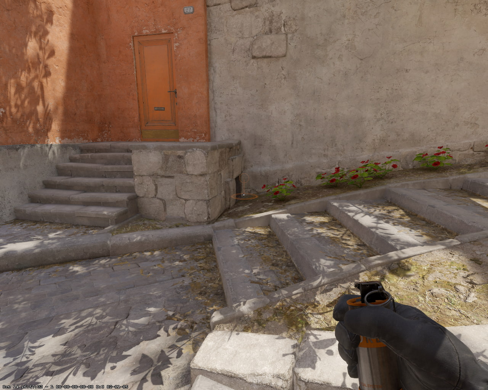
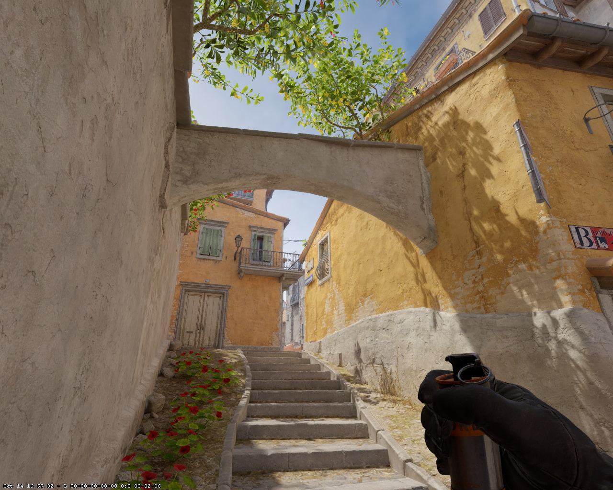
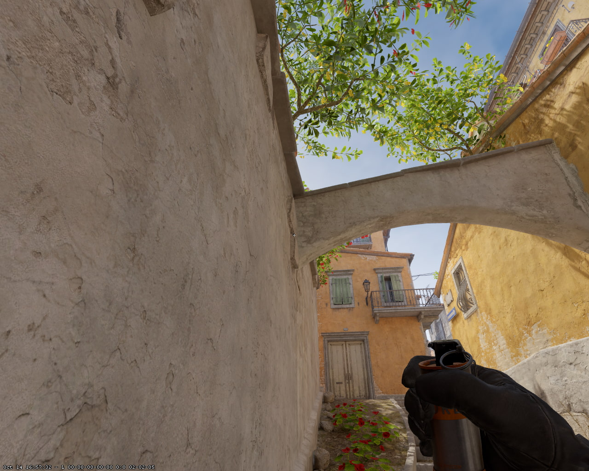
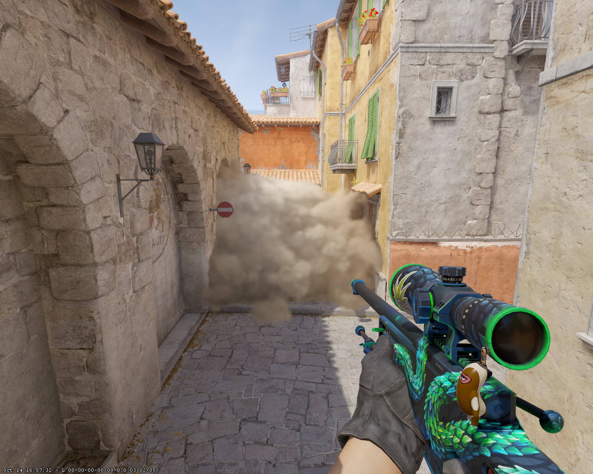
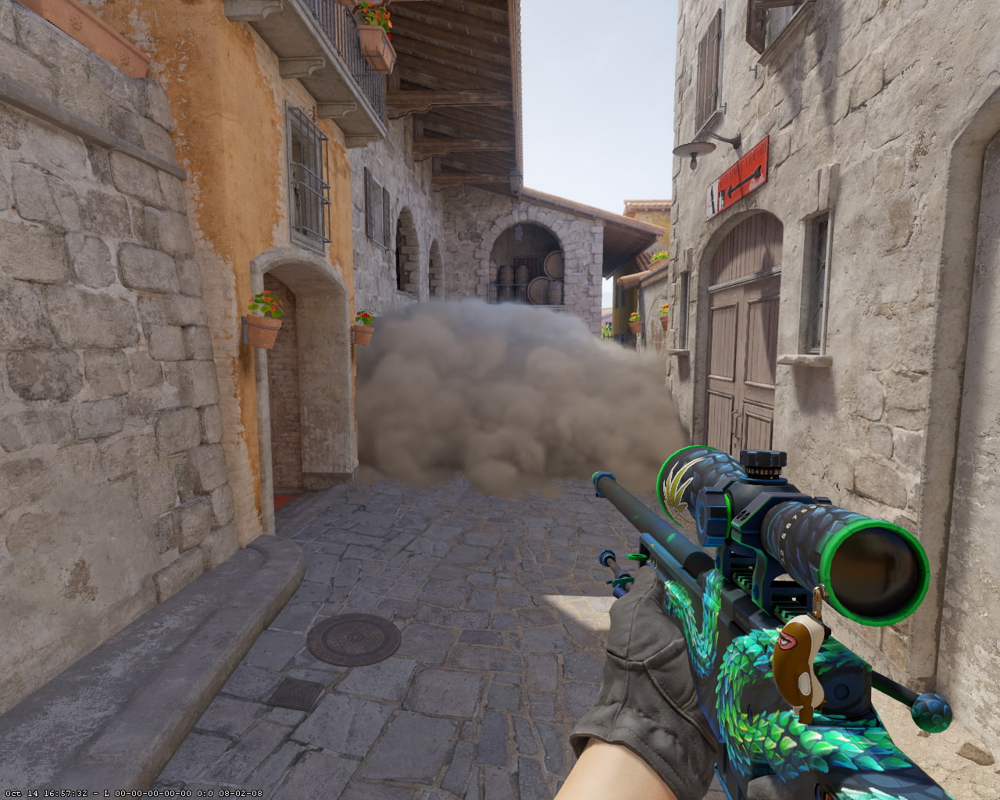

📍 Натискай на картинки для збільшення. Зірочка додає позицію в «Мій раунд», око ховає картку вниз.
⚔️ МІД: КОНТРОЛЬ ТА ПЕРЕТЯЖКА
💡 Тактична порада: Це хороші смоки для того, щоб зарашити мід і здійснити швидкий вихід на точку B.
📍 Ставай тут

🎯 Цілься тут (Точка 1)

🎯 Цілься тут (Точка 2)

💥 Результат один

💥 Результат другий

⚡ КИДОК: JUMPTHROW + ЛКМ